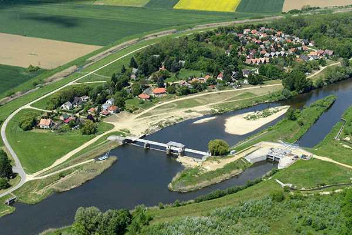
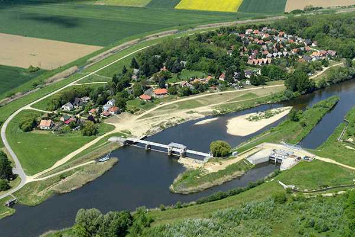

A tengerpart nélküli Magyarország a Duna medence középső szakaszán helyezkedik el, területének (93.030 km2) egésze a Duna mednce részét képezi. A folyók az országba nyugati, északi és keleti irányból lépnek be, és déli irányba folynak tovább.
A legjelentősebb folyónak, a Dunának a legnagyobb mellékfolyói a Tisza és a Dráva. A felszíni vizek 82%-át a Duna és a Dráva vezeti le, a Tisza 18%-ot tesz ki, bár az ország 50%-a a Tisza vízgyűjtőjéhez tartozik.
A Duna Magyarországi szakasza 417 km, az északi-nyugati része magyar-szlovák határfolyó, majd onnan délre kanyarodik. A Tisza 595 km-en keresztül folyik az ország keleti részén.
Magyarország topográfiai jellemzőit tekintve a Kárpát-medence legmélyebb részén terül el, melynek nagy része alföld. Az ország nagy része a tengerszint feletti 200 m alatt (illetve a tengerszint feletti 78 és 200 m közötti magasságban) fekszik, csak 2 % található 400 m felett, a hegyek magassága pedig eléri a 1015 m-t az ország északi részén (Kékes).
Itt található Közép-Európának legnagyobb és legsekélyebb édesvízi tavai (Balaton, Velencei-tó, Fertő-tó/Neusiedlersee).
A felszíni vizek általános jellemzőit az ország elhelyezkedése határozza meg, mivel 95%-uk a szomszédos országokból érkeznek: Horvátország, Ausztria, Szlovákia, Ukrajna és Románia. Magyarország a "lefolyó vizek" országa.
Velencei-tó
A Velencei-tó Magyarország harmadik legnagyobb természetes tava. Kedvező természeti és földrajzi adottságainak, valamint a mederszabályzásnak köszönhetően a Balatonhoz hasonlóan hazánk legkedveltebb üdülőhelyeinek egyike.
Területe 26 km², a felület harmada nádassal borított. A napsütés hatására, valamint a sekély, átlagosan 1,5 m-es mélysége miatt Európa egyik legmelegebb tava: a víz hőmérséklete elérheti a 26-28 °C-ot is.
A Velencei-tó ásványi anyagokban (nátrium és magnézium) gazdag, kiváló vize a kimerült szervezetet felfrissíti, regenerálja. A fürdésen kívül a reumatikus fájdalmak enyhítésére is alkalmas.


Hévízi-tó
A Hévízi-gyógytó Természetvédelmi Terület legismertebb látványossága a Hévízi-tó vagy Hévízi-gyógytó. A tó 4,44 ha kiterjedésével és az őt körülvevő 50 ha területű véderdővel Európa legnagyobb gyógyhatású melegvizes tava. Az első tutajokra épített fürdőházat 1772-ben Festetics György, a keszthelyi Georgikon alapítója építtette.
Ellentétben a többi melegvizes tóval, melyek általában vulkanikus eredetű helyeken, agyag- vagy sziklatalajban vannak, a Hévízi-tó tőzegmedrű forrástó, amelyet a 38 méter mély Hévízi-forrásbarlangból feltörő, másodpercenként 410 liter vízhozammal 38 °C-os víz táplál. A Keszthelyi-fennsík nyugati lejtője mentén, a Hévízi-völgyben található, Hévíz városa mellett.
A tó páratlan természeti környezetét elsősorban a parkkal övezett gyógyvizű tó, a vízfelszín felett lebegő páraréteg, a tó felszínén úszó indiai vörös tündérrózsák (Castalia rubra longiflora) teszik különlegessé.
| Hévízi-tó növényvilága | |
|---|---|
| Név | Leírás |
| Baktériumok: |
A baktériumok a tó élővilágának domináns elemei, a gyógyhatással is kapcsolatban állnak.
|
| Zöldalgák: | A zöldalgák az egész tóban előfordulnak, kivéve a forrásbarlang környékét. |
| Indiai vörös tündérrózsa: | A tündérrózsa védett növénye a Hévízi-tónak, a növényt bolygatni, virágát leszakítani tilos! |
| Fehér tündérrózsa: | A tóból már kipusztult, de még nagy számban tenyészik az üzemvíz-csatornában. |
| Tengermelléki káka: | A lefolyó szélén a náddal együtt sűrű állományt képez. |
| Mocsárciprus: | Hévízi állománya jelentős, több utat szegélyez. |
További vizeink képekben
")
")
")
")
") 
